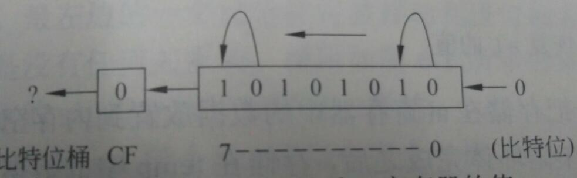
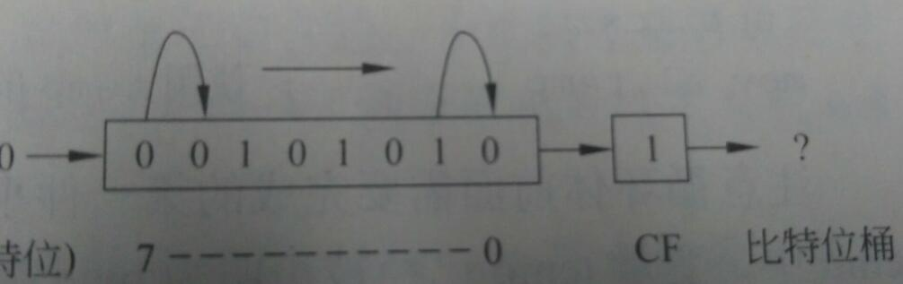
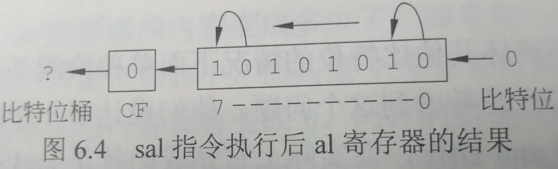
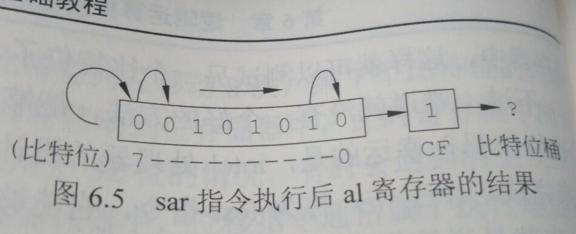
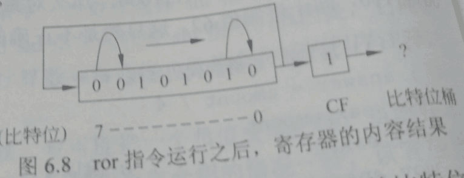
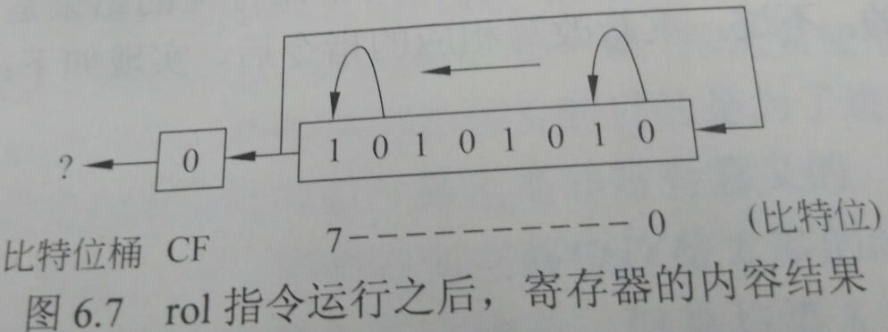

八、逻辑运算指令
数字在计算机中以二进制存储，每个位数字为0或者1，当两个二进制数字进行逻辑按位&，逻辑按位|，逻辑异或^操作，
可以采用汇编语言提供的逻辑运算指令and,or, xor,not等指令。
and指令：
C语言&操作，将0110&1101得出结果为0100
C语言代码为
1 | if(flag & maskit) |
汇编语言高级指令可实现：
1 | mov eax, flag |
不采用高级指令的情况下可采用如下代码：
1 | if01: mov eax, flag |
and指令和cmp指令一样，and运算执行后，eflags寄存器的响应比特位会被设置。
同样xor，not， or等指令也会设置eflags相应比特位。
jz 指令之前介绍过，当eflags寄存器相应比特位被设置为0后该指令将逻辑跳转到指定位置。
同样ZERO?也可以判断eflags寄存器相应比特位是否被设置为0，为零则为真，反之为假
1 | mov eax, flag |
or指令:
or指令和and指令用法一样
1 | ;flag = flag | maskit |
xor指令：
1 | ;flag = flag ^ maskit; |
三种指令的两个参数类型限制是一样的
1 | and mem, imm |
or， xor参数类型和上面and一样，三种命令都不可以直接操作两个内存变量。
九、逻辑移位指令
shl reg, cl 将reg中数据向左移动cl寄存器中数值大小的位数。
shl reg, imm 将reg中数据向左移动imm立即数大小的位数。
举例：
1 | mov cl , 3 |
`上述代码都是将reg中数值向左移动三位，那为什么采用cl寄存器呢？因为在老式的8086/8088处理器上，操作数中能使用的唯一立即数为1，如果调用shl reg,3
会出问题，所以通常的做法是mov cl, 3先将3移动到cl寄存器中，再调用shl reg, cl可完成reg数值向左移动3位`。
shl 的参数除去reg，还可以是mem内存
shl mem, cl
shl mem, imm
同样shr为向右移动，参数形式和shl一样。

如果10101010调用shl向左移动一位，那么所有比特位的数字依次左移，第0个位置比特位数字填充0，第7个比特位数字1向左移动到CF进位标记里。
数字变为01010100。

同理，shr逻辑右移也是移动后第7个比特位补充0，第0个比特位数字放入CF标记中。
写一段代码测试每个比特位数字为1的位数。
1 | mov count, 0 |
由于and指令会导致第一个参数数值被修改，所以将al数值每次and操作前都copy到ah中。最后处理完所有比特位，将temp数据copy回al中。
test命令可以避免and修改第一个参数数值的问题，同样test命令使用后eflags寄存器相应的比特位也会被设置。
1 | mov count, 0 |
十、算术移位指令
算数左移
sal reg, cl
sal reg, imm
sal, mem, cl
sal reg, cl
参数和shl一样。移动效果和shl一样，都是将低比特位依次移动到高比特位，最高比特位移动到CF标记里，空位补0。
移动示意图：

如果符号位为0，那么左移操作和shl一样，没什么问题。
如果符号位也就是第七个比特位为1，如1111 0000，向左移动一位那么数据为1110 0000，左移操作后数值为原数值乘以2，负数在计算机中以补码形式存储。
整数的补码为原码，负数的补码为正数原码按位取反末尾加1, 1111 0000-1为1110 1111，按位取反后为0001 0000，该数值为十进制16，所以1111 0000为
-16，-16乘以2，也就是左移操作，为-32，那么-32在二进制中如何表示呢？
32用8位二进制表示为0010 0000，负数为正数原码按位取反末尾+1,0010 0000取反后为1101 1111，末尾+1为1110 0000, 1110 0000恰好为1111 0000左移一位得到的数字。
考虑这样一个问题，如果是图中所示数字10101010左移会造成数字变为0101 0100，这样
最高位变为0怎么办？
这就是所谓的左移溢出，8位二进制能表示的二进制数为0111 11111~1111 1111 。
0111 1111 表示十进制127
1111 1111 表示十进制-1
1000 0000 是某负数补码， 该数-1取反后得到1000 0000 该数值为128原码
所以1000 0000 表示-128，(也可以1000 0000 按位取反末尾+1得到128)
那么8位二进制能表示的十进制数为127~-128
10101010表示的负数为-86，超过-64了。
凡是超过-64都会引起左移位溢出，负数补码除去符号位，最高位为0，此时逻辑左移会导致数据溢出。
算数右移
算数右移保持符号位不变，其余比特位依次向右移动，空出的比特位补零，最右边的比特位移除后进入CF标记。

计算product = num * 8；可通过移位指令完成，速度更快
1 | ;product = num1 * 8; |
乘以8，不是sal eax, 8，这样是乘以256，应该为移动三位。
answer = amount /4 ;
1 | ;answer = amount/4; |
十一、循环移位指令
循环移位将末尾移除来的数据放入另一端空缺的比特位。
循环左移位
rol reg, cl
rol reg, imm
rol mem, cl
rol mem, imm
循环右移位
ror reg, cl
ror reg, imm
ror mem, cl
ror mem, imm
循环右移位

循环左移位

之前检测一个8位二进制数中比特位数字为1的比特位个数程序可通过循环右移完成，因为循环右移8位后，移位的结果和初始数值一样。
1 | mov count , 0 |
十一、堆栈操作
push 指令
push reg
push mem
push imm
push指令为入栈指令，参数可以为寄存器reg， 内存mem， 立即数imm。
pop指令
pop mem
pop reg
pop出栈指令，参数只能为内存和寄存器。
将监测比特位数值为1的比特位数程序和栈操作指令结合
1 | push eax |
十二、xchg交换指令
xchg交换指令用于交换两个地址空间数据，xchg参数可以为以下几种
xchg reg, reg
xchg reg, mem
xchg mem, reg
同样不可以操作两个内存。
实现两个数交换
1 | temp = num1; |
用mov指令实现为：
1 | mov edx, num1 |
用push， pop指令实现为
1 | push num1 |
用xchg指令实现为
1 | mov eax, num1 |
三种办法的效率比较为mov指令最快，其次xchg指令，最后为push pop指令。
这一篇就介绍这里，下一篇讲述宏和过程。
我的公众号：